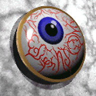

Introduction
Ordering Pins
Pin
Rejects
1997
Rejects
1997
Worlds
Pin Trader's
Guide

Making Your Own Pins
|  | Our town's 1996 World Finals pins caused a sensation, with hordes of ravenous pinmongers hounding us for the 'Edison Eyeball'. Look carefully... in the blood vessels you can see the words 'Edison NJ' and the OM logo! This pin made up for the meager value of the New Jersey Tomato, and those lucky few who had it cashed in on Belles, Peaches, Dream Catchers, and the like. |
Pin Companies
Several companies specialize in making OM pins. Contact them for more information. If your company specializes in pin-making, send me samples (especially samples of OM pins) and I'll list your company here.
- Zanca, Inc
1-800-397-4156
Contact Dave Fox
Pin Pals
15510 Green Timber Road
Tillamook, OR 97141
503-842-8501
Contact Larry Kaiser